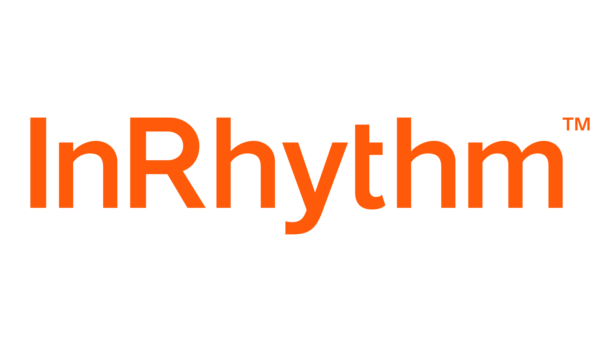

InRhythm NOWAI Engineer
MAY 2026 — PRESENT- Built a reusable AI Engineering Workbench with agents, MCP integrations, hooks, and automated validation for 30+ engineering teams.
- Connected specifications, implementation, tests, and independent review into workflows that cut spec-to-review-ready time by 35% in internal comparisons.
- Built an evaluation harness covering 8 payment-code failure modes, finding defects even in a fixture with 100% unit-test coverage.
- Unblocked engineers in live sessions by tracing setup, tooling, and test failures—and turned recurring problems into reusable guidance.